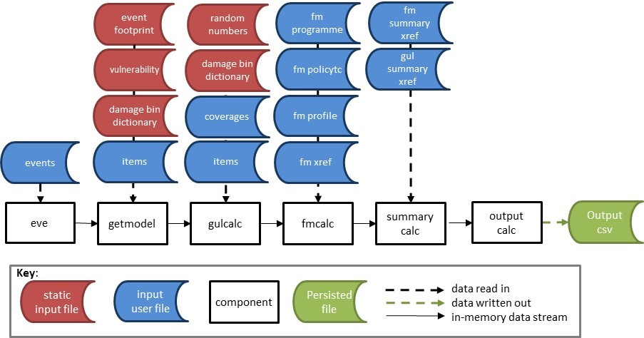
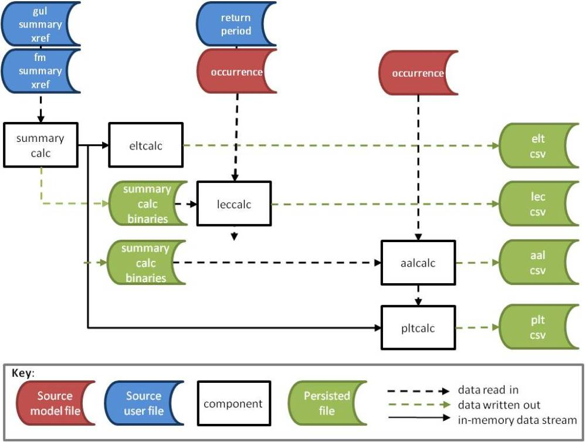

This section provides an overview of the reference model, which is an implementation of each of the components in the framework.
There are five sub-sections which cover the usage and internal processes of each of the reference components;
The set of core components provided in this release is as follows;
The standard input and standard output data streams for the core components are covered in the Specification.
Figure 1 shows the core components workflow and the required data input files.

The model static data for the core workflow, shown as red source files, are the event footprint, vulnerability, damage bin dictionary and random number file. These are stored in the 'static' sub-directory of the working folder.
The user / analysis input data for the core workflow, shown as blue source files, are the events, items, coverages, fm programme, fm policytc, fm profile, fm xref, fm summary xref and gul summary xref files. These are stored in the 'input' sub-directory of the working folder.
These are all Oasis kernel format data objects with prescribed formats. Note that the events are a user input rather than a static input because the user could choose to run a subset of the full list of events, or even just one event. Usually, though, the whole event set will be run.
The output components are various implementations of outputcalc, as described in general terms in the Specification. The results are written directly into csv file as there is no downstream processing.
The files required for the output components are shown in Figure 2.

The data conversion components section covers the formats of all of the required data files and explains how to convert data in csv format into binary format, and vice versa.
The stream conversion components section explains how to convert the binary data stream output to csv, plus how to convert gulcalc data in csv format into binary format. These components are useful when working with individual components at a more detailed level.
The validation components section explains how to use the validation components to check the validity of the static and input files in csv format, before they are converted to binary format. There are both validation checks on individual files and cross checks for consistency across files.
The version of the installed components can be found by using the command line parameter -v. For example;
$ gulcalc -v
gulcalc : version: 3.0.7Component usage guidance is available using the parameter -h
$ fmcalc -h
-a set allocrule (default none)
-M max level (optional)
-p inputpath (relative or full path)
-n feed net value (used for reinsurance)
-O Alloc rule2 optimization off
-d debug
-v version
-h helpThe components have additional command line parameters depending on their particular function. These are described in detail in the following pages.